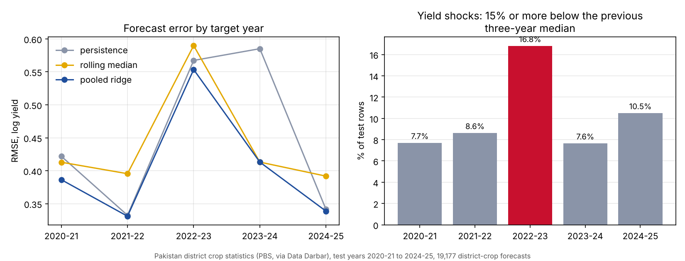

Data science · Agriculture
Pakistan crop yield forecasts were 90% sure and right 75% of the time
A leakage-safe benchmark on official district crop statistics, 1981-82 to 2024-25, tested on the five most recent years.
By Muzammal Hussain · 11 November 2026 · 6 min read
If a district's wheat or cotton yield is going to drop next year, the earlier someone knows, the better. I wanted to see how well simple methods forecast next year's yield for every district and crop in Pakistan's official statistics, and, more importantly, whether their stated uncertainty can be trusted. The short answer: the best model was only modestly better than "same as last year", and its "90% sure" ranges were right about three times in four.
Key findings
- Data: 74,803 district-crop-year rows from Pakistan Bureau of Statistics tables (122 districts, 105 crop labels). Tested on 19,177 forecasts for 2020-21 to 2024-25.
- A pooled ridge model had the lowest RMSE (0.414 on the log scale) against 0.448 for a three-year median and 0.464 for last year's yield. The gain is real (95% CI for the difference -0.043 to -0.027) but small.
- Last year's yield still had the lowest typical (absolute) error. Ridge mainly cut the large misses.
- Intervals built to hold 90% of the time held only 74.6% of the time in the test years.
- For yield shocks (15% or more below the recent median), a plain last-year rule beat ridge: F1 0.309 against 0.195.
Data and method
The data are district crop area, production and yield tables published by the Pakistan Bureau of Statistics, in the machine-readable extract packaged by Data Darbar. I downloaded it on 10 November 2026 and recorded its SHA-256 hash so the run can be repeated on exactly the same file. Rows with missing values or unlabelled crops were dropped and never filled with zero.
Each forecast predicts one district-crop yield one year ahead using only earlier years. The split is by time: training up to 2015-16, calibration 2016-17 to 2019-20, test 2020-21 to 2024-25. Three forecasters were compared:
- Persistence: next year equals this year.
- Rolling median: the median of the last three yields.
- Pooled ridge: one linear model with nine lagged features, shared by all crops.
Around the ridge forecast I built a split-conformal interval. Conformal prediction looks at how wrong the model was on the calibration years and sets the width of the range so that, if the future behaves like those years, the true value falls inside 90% of the time. A yield shock was defined as a yield at least 15% below the median of the previous three years.
Results
| Forecaster | RMSE (log yield) | MAE (log yield) | Shock alerts F1 |
|---|---|---|---|
| Persistence | 0.464 | 0.200 | 0.309 |
| Rolling median | 0.448 | 0.217 | n/a |
| Pooled ridge | 0.414 | 0.209 | 0.195 |
Test shock rate: 10.4%. Persistence alerts had precision 0.392 and recall 0.255; ridge alerts had precision 0.338 and recall 0.138. Conformal interval: nominal 90%, observed 74.6%, mean width 0.477 on the log scale.

What I noticed
- 2022-23 stands out. The shock rate was 16.8% against 7.6% to 10.5% in the other test years, and all three forecasters had their highest or second-highest error that year. It is the season of the 2022 monsoon floods, which caused heavy agricultural losses, although this analysis does not show that the floods caused these particular errors.
- The next year shows why last-year rules are fragile: in 2023-24 persistence carried the bad year forward and its error was 0.585, while ridge and the rolling median were at 0.413.
- The interval result matters most to me. A range that says "90%" but holds 75% of the time gives false confidence. The calibration years before 2020 simply did not look like the years after, so the guarantee broke. Fixing this, for example by recalibrating on recent years, is the next step.
- Smoothing models are slow to see sudden drops. Ridge was better on average but missed more shocks than the plain last-year rule.
Limitations
- District yields are administrative estimates, and district boundaries and codes changed over four decades. Some districts and regions are missing from the extract.
- This run still has known label issues: one crop appears under two spellings that differ only by case, and some labels are aggregates (for example "Fodders Total") pooled with single crops. Dates and grapes show unusually large errors that may come from reporting or unit changes. These will be cleaned before any further study, and the numbers may move.
- One pooled model covers crops as different as sugarcane and pulses, and no weather or satellite data were used.
- The 15% shock threshold is an operational choice, not an official definition.
- These are statistical forecasts of published aggregates, not farm-level advice or official PBS estimates.
Reproduce the analysis
The repository downloads the data, records its hash, runs the forecasts and writes the per-crop and per-year tables. It has 15 tests and runs on Python 3.9.
Data: Pakistan Bureau of Statistics district crop statistics, machine-readable extract by Data Darbar (derived data labelled CC BY 4.0 by Data Darbar; not official PBS estimates). Context: UNDP (2022), Pakistan: flood damages and economic losses over USD 30 billion and reconstruction needs over USD 16 billion. Method: Lei, G'Sell, Rinaldo, Tibshirani and Wasserman (2018), Distribution-free predictive inference for regression, Journal of the American Statistical Association.